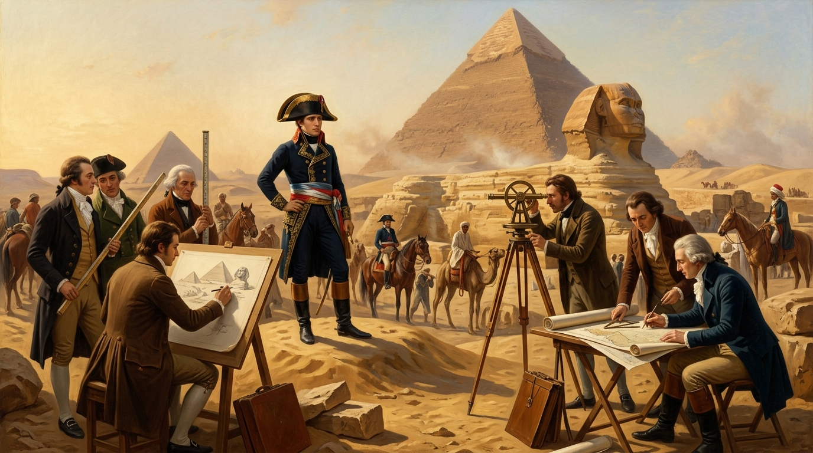
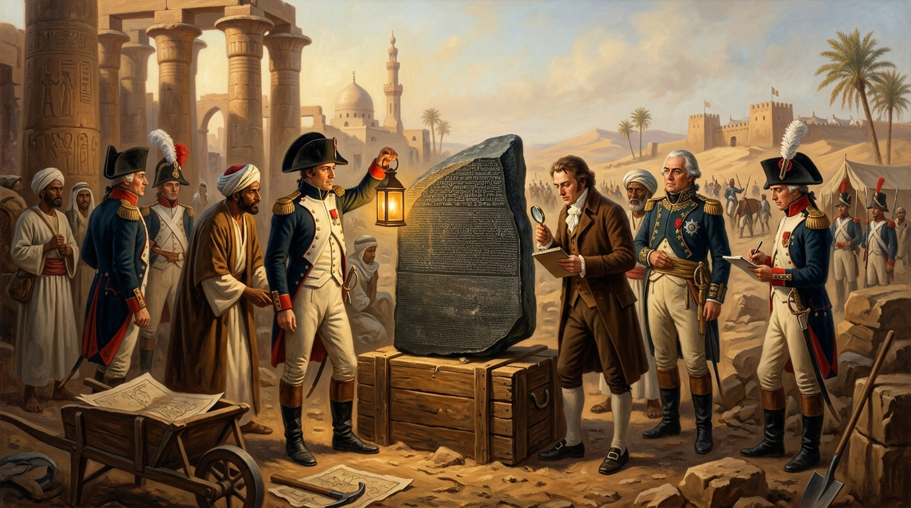
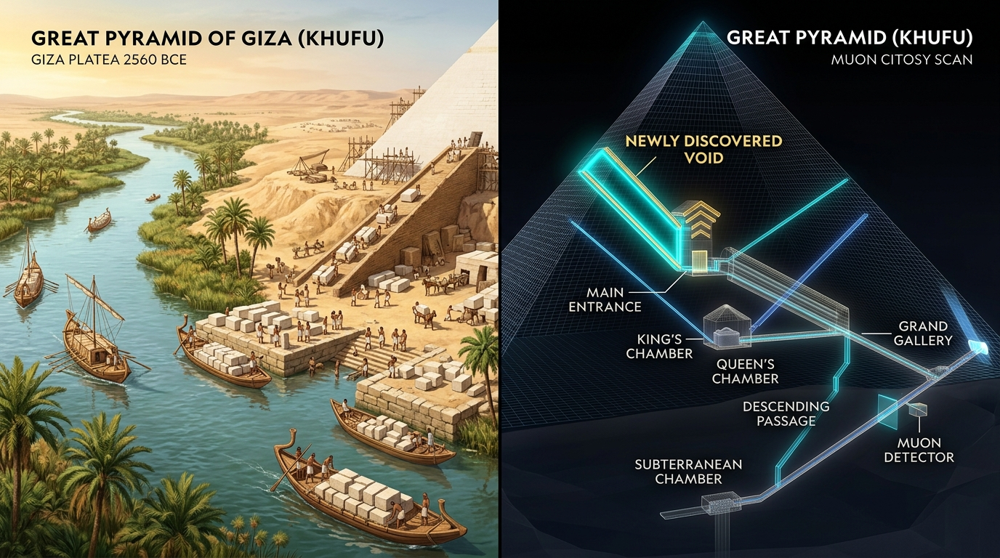

Part 1 • July 17981. An Army of Soldiers... and 167 Scientists!
When 29-year-old Napoleon Bonaparte sailed to Egypt in 1798 on his military expedition, he did something unusual: he brought 167 savants—France's top engineers, mathematicians, and artists.
They measured the Pyramids of Giza with scientific precision and published the 24-volume Description de l'Égypte, which founded modern Egyptology as a lasting legacy.

Part 2 • July 1799 (Rashid)2. The Rosetta Stone Unlocks Ancient Egypt
For over 1,400 years, no living person could read Egyptian hieroglyphs. In 1799, French soldiers rebuilding a fort in Rashid (Rosetta) uncovered a dark granodiorite slab carved with the same decree in three scripts: Hieroglyphs, Demotic, and Ancient Greek.
Because scholars could read Greek, French linguist Jean-François Champollion used it to decipher hieroglyphs in 1822!

Part 3 • 1799 to Modern Scans3. Khufu's Chamber & Modern Discoveries
In August 1799, Napoleon asked to be left alone inside the dark King's Chamber of Khufu's Great Pyramid. He came out pale and shaken, saying: "Even if I told you, you would never believe me."
Today, scientists use non-invasive cosmic-ray scans (the ScanPyramids project) to reveal a hidden 9-meter void above the entrance, and radar satellites mapped the lost 64-km Ahramat Nile branch used for the logistics of floating pyramid stones!
Historical Myth vs. Fact Buster
Click "It's a MYTH" or "It's a FACT" on each statement below to reveal the historical proof:
Target Vocabulary Vault (12 Key Terms)
Click 🔊 Listen to hear the pronunciation, or click any card to flip between the definition and example sentence.
Grammar Focus: Speculating About the Past
When discussing archaeological mysteries or historical theories, native speakers use Modal + have + Past Participle (V3) to show how certain they are:
Use this when the evidence points to a strong logical conclusion.
Use this when there are multiple possible theories and we aren't sure.
Use this when historical or scientific evidence proves something did NOT happen.
Quick Grammar Check: Click the Best Modal
Questions We Will Discuss in Class
- 1. Egyptian Perspective: How is Napoleon’s 1798 campaign (Al-Hamla Al-Faransiyya) taught in schools in Egypt today? Is he remembered more as an invader, or for the scientific work of the 167 savants?
- 2. The Sphinx & Tourist Myths: Why do you think the rumor blaming Napoleon for the Sphinx's nose became so popular worldwide? What other myths do tourists believe about the pyramids?
- 3. Inside Khufu's Pyramid: What do you think happened when Napoleon was alone inside the King's Chamber? Should scientists drill into the newly discovered voids, or keep research strictly non-invasive?
- 4. The Rosetta Stone Debate: Now that the Grand Egyptian Museum (GEM) is open next to Giza, should the British Museum repatriate the Rosetta Stone to Egypt?